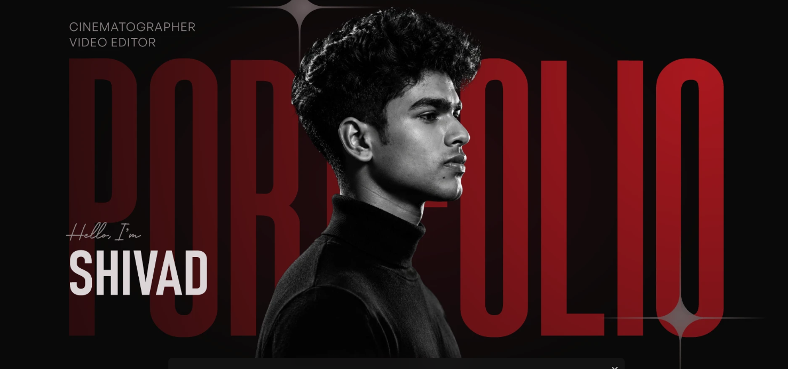

The saved collection could not be loaded.
Shivad — cinematographer & video editor. Portfolio 2026.

01 / THE SELECTIONA FEW PLACES TO BEGIN
A vision.
In every frame.
A closer look at the people,
spaces, and details in motion.
02 / BEHIND THE FRAMESHIVAD S R
A point of view.
A feeling that stays.
I’m Shivad, a videographer and video editor based in Kozhikode, India.
From a product’s smallest detail to the atmosphere of a space, this collection brings together my work across brand films, walkthroughs, presentations, and personal stories.
VideographyVideo editingVisual storytelling
Find me on Behance ↗03 / THE FULL COLLECTION2026 EDITION
The film
collection.
121VIDEO ENTRIES
Explore the complete collection, including original cuts and alternate versions.
No films found.
Try a different title, brand, or collection.
Explore the original collections ↗
HAVE A STORY IN MIND?LET’S MAKE IT MOVE
Let’s createthe next frame.↗